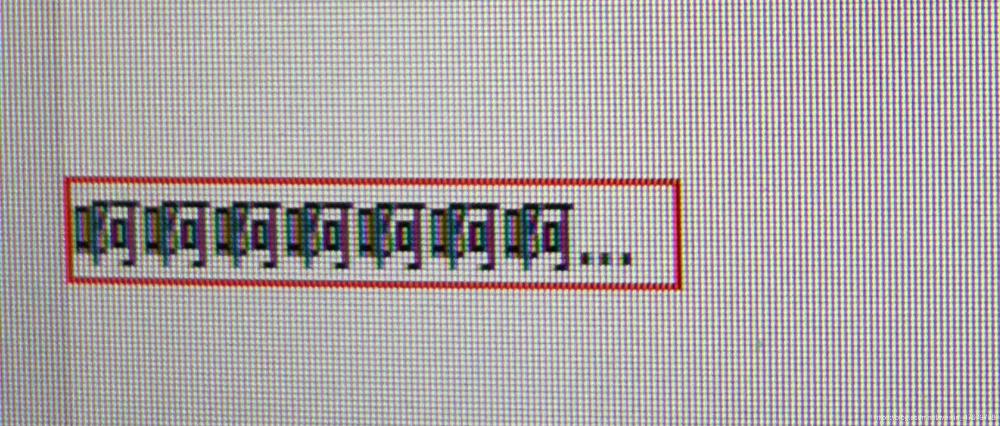
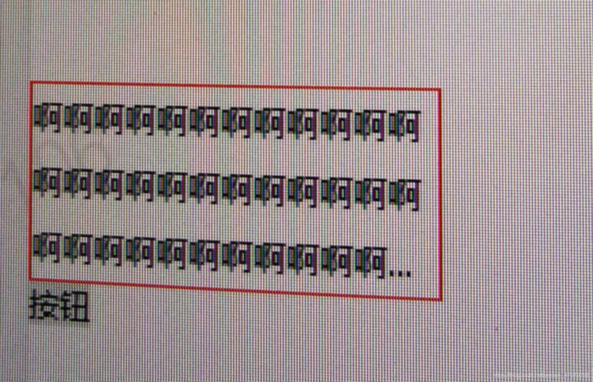

# 多行溢出省略号显示（css/js）实现！
关于多行溢出显示省略号的问题，如果是根据字符的长度个数限制 超过部分替换为省略号，这种还是很好处理的，关键是根据行数，在未知情况下你不知道需要多少内容，去填满一个元素，做起来还是比较麻烦的，网上很多种乱七八糟的方案，拿过来又不能直接用，我就结合网上的思路重新整理一波可以直接用的几种方案。 建议使用js方案.
一、单行溢出出现省略号显示：
<div class="p">啊啊啊啊啊啊啊啊啊啊啊啊</div>
样式：
.p{
width:1rem;
overflow:hidden;//超出部分隐藏
white-space:nowrap;//禁止换行
text-overflow:ellipsis//省略号
}
复制代码
图： 
二、多行溢出出现省略号（css方案）：
这样方案简单易懂，但是存在兼容性，只适用于在webkit浏览器或者移动端。
<div class="p">小绵羊小绵羊小绵羊小绵羊小绵羊小绵羊</div>
样式：
.p{
width:1rem;
height:0.4rem;//需要设置高度
//必须结合的属性，将对象作为弹性伸缩盒对象的子元素的排列仿古式
display:-webkit-box;
-webkit-box-orient:vertical;
text-overflow:ellipsis;
-webkit-line-clamp:2;//例如超过2行显示省略号
overflow:hidden;
}
复制代码
注意：这种用css解决的方案存在兼容性问题，这里提一个小捷径，如果你使用css出现了兼容问题，可以尝试下把样式写在行内，可能会解决兼容哦。。。。。 那么有没有完美的方案，也不存在兼容的方案呢？强大的js可以解决，只不过有点麻烦，但是比较保险的。。。。
三、多行溢出出现省略号（js方案）：
<template>
<div class="box">
<textarea id="" rows="10" v-model="val"></textarea>
<div id="boxid" class="text" v-text="val" ></div>
<button @click="btn">按钮</button>
</div>
</template>
<script>
export default {
data(){
return {val:""}
},
methods:{
btn(){
//参数1 元素id 参数2 要限制的行数 参数3 输入的值
this.moreline('boxid',3,this.val)//传3表示超过3行时省略号显示。
},
moreline(id,rows,str){
var boxid = document.getElementById(id);
var computedStyle = document.defaultView.getComputedStyle(boxid,null);
var lineHeight = computedStyle.lineHeight;
var top = rows*parseInt(lineHeight);
var tempstr = str;
boxid.innerHTML = tempstr;
var len = tempstr.length;
var i = 0;
if(boxid.offsetHeight<=top){
}else{
var temp = "";
boxid.innerHTML = temp;
while(boxid.offsetHeight<=top){
temp = tempstr.substring(0,i+1);
i++;
boxid.innerHTML = temp;
}
var slen = temp.length;
tempstr = temp.substring(0,slen-1);
len = tempstr.length;
boxid.innerHTML = tempstr.substring(0,len-1)+"...";
boxid.height = top+"rem";
}
}
}
}
</script>
复制代码
结果图： 
使用js实现不太容易理解，目前最靠谱，方法封装好，灵活使用，函数封装好，可根据各自的需要通过传参数满足各自的需要。给个赞吧。。。。。
------努力努力再努力。
文章来源：https://juejin.cn/post/6921351655359250440